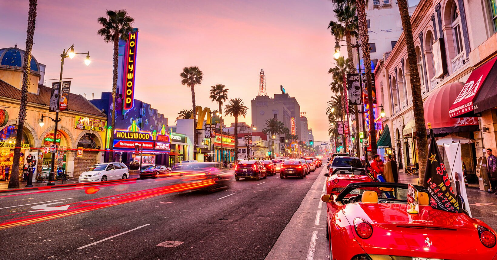

Los Angeles é uma grande cidade do sul da Califórnia e também o centro da indústria de cinema e televisão do país. Perto do famoso letreiro de Hollywood, é possível conhecer os bastidores das produções nos estúdios Paramount Pictures, Universal e Warner Brothers. Na Hollywood Boulevard, o TCL Chinese Theatre exibe impressões de mãos e pés de celebridades na Calçada da Fama, uma homenagem a milhares de astros, e se pode comprar mapas das casas dos artistas.
Surfistas, praticantes de ioga, turistas, produtores de Hollywood, artistas de rua e muitas outras figuras convivem em paz nas famosas praias Santa Monica e Venice Beach, que são as melhores vitrines do estilo de vida californiano em Los Angeles. A maneira ideal de conhecer a região é alugar uma bicicleta e pedalar pelo calçadão à beira-mar.
3 PONTOS TURISTICOS PARA VISITAR EM LOS ANGELES
Warner Bros Studios
O tour da Warner Bros é bastante divertido, onde os turistas são levados em grandes carrinhos de golfe de um estúdio para o outro, passando por locações de vários filmes conhecidos,
por exposições temporárias surpreendentes e por outras recriadas (como o cenário do Central Perk, de Friends), onde é possível sentar no sofá do café e tirar uma foto.
Para os fãs de cinema e seriados, nenhuma visita à região de Los Angeles estará completa sem visitar pelo menos um dos estúdios de cinema da cidade. A recomendação para marinheiros
de primeira viagem é o Warner Bros Studio Tour, um tour que mostra os bastidores ultra movimentados de um dos estúdios de cinema mais legais de Los Angeles. Aqui foram filmados filmes clássicos como
Casa Blanca, Ocean’s Eleven, Batman e seriados famosos como Friends, Big Bang Theory, Full House (e Fuller House) e Gilmore Girls.
Disneyland e Disney California Adventure

Inaugurada em 1955 a Disneyland é o xodó dos californianos e a concretização do sonho de Walt Disney, uma terra repleta de princesas de conto de fadas, selvas exóticas, galáxias espaciais,
muitos personagensincríveis e uma decoração retrô completamente diferente das outras Disney’s do mundo.
O complexo da Disney Califórnia tem dois parques temáticos, três hotéis, um centro de convenções e a animada Downtown Disney,
um centro de entretenimento com lojas, bares e restaurantes.
Placa de Hollywood
O letreiro de Hollywood é um clássico de Los Angeles, mas o que nem todo turista sabe é que é possível chegar bem pertinho dele! Se você estiver de carro,
basta colocar no Waze ou Google Maps o endereço 3000 Canyon Lake Drive. C
Como a placa fica em uma propriedade privada, você vai deixar o carro na rua (sim, as vagas são bastante disputadas) e caminhar até o mais próximo que você puder.
Se você for fã de trilhas, também dá para chegar pertinho da placa com uma caminhada de 14 Km.
E, claro, vale dizer que além de você conhecer um dos pontos turísticos de Los Angeles, por estar no alto, você terá vistas lindas da cidade.
Você também pode se interessar por: